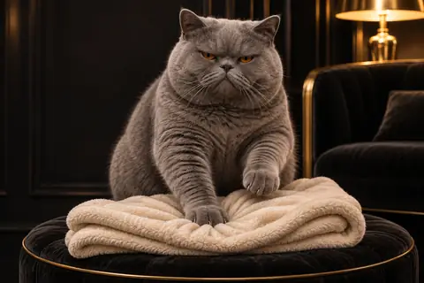

Koci Notatnik / Krótkie opowieści
Kocie rytuały · 2 min czytaniaOtworzyłem piekarnię na kocu. Człowiek pyta, gdzie bułki.
Personel rozłożył koc. Sprawdziłem fakturę łapką. Potem drugą. Potem zacząłem produkcję. Człowiek powiedział, że robię bułeczki. Jak zwykle zobaczył pracującego i od razu pomyślał o jedzeniu.

Dlaczego kot ugniata koc przednimi łapkami?
Ugniatanie pojawia się już u kociąt podczas ssania mleka. U dorosłych kotów może towarzyszyć przyjemnemu odpoczynkowi; jego dokładnej przyczyny nie da się ustalić dla każdego kota.
Zakład czynny wyłącznie dla właściciela
Lewa łapa. Prawa łapa. Ugniatam z twarzą brytyjskiego arystokraty, który osobiście sprawdza sprężystość majątku.
— Może upieczesz coś na śniadanie? — zapytał. Kochany, zatrudniłem cię do otwierania saszetek. To nie jest program wymiany obowiązków.
Jako kociak miałem inne warunki pracy. Teraz mam koc, apartament i człowieka, który co chwilę komentuje proces. Nie da się prowadzić manufaktury, kiedy kontroler mówi „ojejku” co osiem sekund.
Przyniósł telefon. Oczywiście. Bez dokumentacji nikt nie uwierzy, że kot poruszył dwiema łapami. Spojrzałem w obiektyw. To miało być ostrzeżenie, ale on uznał je za najlepsze ujęcie.
Położyłem się na gotowym miejscu. — A bułeczki? — zapytał. Nie ma. Piekarnia zmieniła profil na hotel. Pokój zajęty.
Co ma zapamiętać Twój człowiek
- Podłóż miękki, grubszy koc, jeśli pazurki przeszkadzają.
- Nie karć za ugniatanie i nie odpychaj kota gwałtownie.
- Jeśli kot odgryza i połyka materiał, zabezpiecz go i skonsultuj się z weterynarzem.